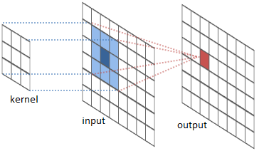
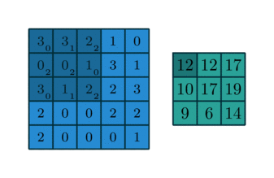

目录
“傻瓜式目标检测”系列的介绍了：(1) 图像梯度向量的概念，以及 HOG 算法如何汇总一张图像中所有梯度向量的信息；(2) 图像分割算法如何工作以检测可能包含物体的区域；(3) Selective Search 算法如何对图像分割的结果进行优化，从而得到更好的候选区域。傻瓜式目标检测教程 第一部分：梯度向量、HOG 与 Selective Search
在第二部分，我们将进一步了解经典的卷积神经网络架构，它们专门用于图像分类。这些经典模型为后续深度学习目标检测的发展奠定了基础。如果你想了解 R-CNN 及其相关模型，请前往。傻瓜式目标检测系列第 3 篇：R-CNN 家族
本系列所有文章的链接如下： [] [] [] []。傻瓜式目标检测教程 第一部分：梯度向量、HOG 与 Selective Search傻瓜式目标检测系列之二：CNN、DPM 与 Overfeat傻瓜式目标检测系列第 3 篇：R-CNN 家族目标检测第 4 部分：快速检测模型
用于图像分类的 CNN
CNN 是“Convolutional Neural Network”（卷积神经网络）的缩写，在深度学习领域已成为解决计算机视觉问题的首选方案。从某种程度上说，它人类视觉皮层工作机制的启发。深度学习概览：适合好奇之人的入门指南
卷积操作
我强烈推荐这篇教程来学习卷积运算，它提供了清晰、扎实的解释，并附有大量可视化和示例。由于本文主要处理图像，这里我们重点关注二维卷积。
简而言之，卷积操作是将一个预先定义好的核（也称为“滤波器”）在输入特征图（图像像素矩阵）上滑动，通过将核与对应位置的输入特征值进行乘加运算来生成输出。由于核通常比输入图像小得多，这些运算结果会形成一个输出矩阵。

图 2 展示了两个实际例子：如何用 3×3 的核对 5×5 的二维数值矩阵进行卷积，得到一个 3×3 的输出矩阵。通过控制填充大小和步长，我们可以生成指定尺寸的输出矩阵。
